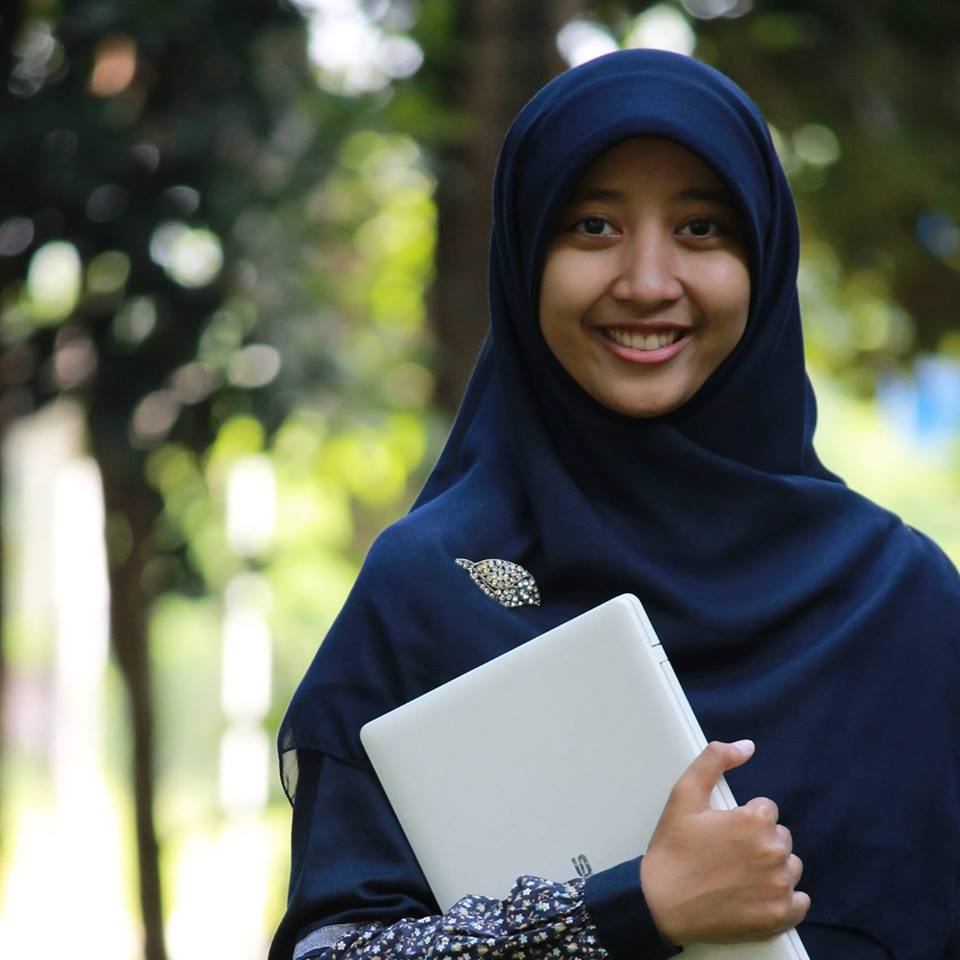
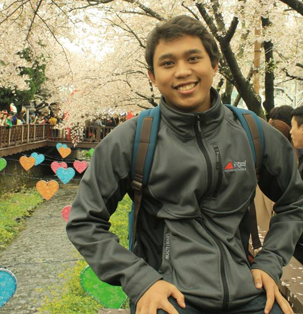
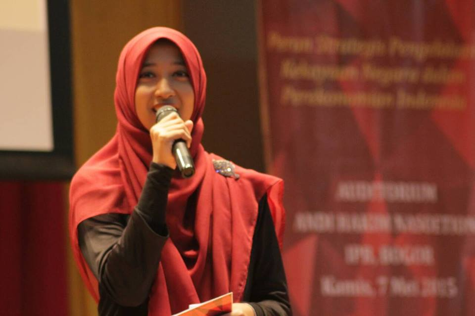
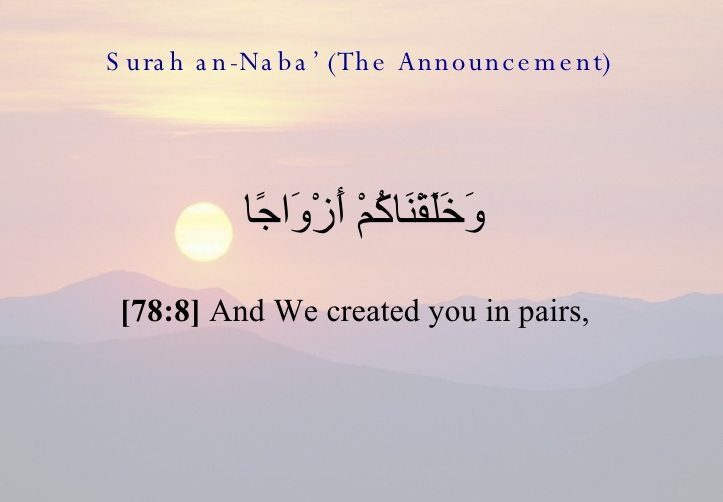
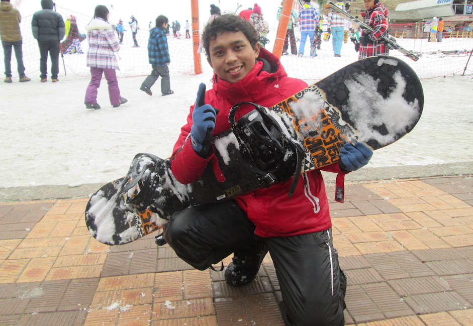

- 
-

- 
Wedding Events

Akad Nikah
26 Maret 2016 @ 09:00 WIB
Masjid At Taqwa Kompleks Balai Besar Biogen, Jln. Tentara Pelajar 3A, Cimanggu, Kota Bogor, 1611

Resepsi
26 Maret 2016 @ 10:30 WIB
Balai Besar Biogen, Jln. Tentara Pelajar 3A, Cimanggu, Kota Bogor, 1611
Ngunduh Mantu
6-7 Mei 2016 @ 10:00 WIB
Rumah Kediaman Bpk. Sabarun, Dusun Pongangan, Pagergunung, Bulu, Temanggung
Photos and Video


